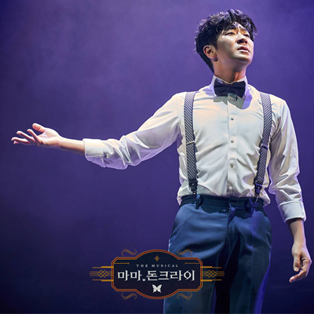
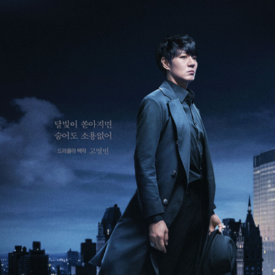

공연 영상
"영원히 끝나지 않을 사랑과 죽음을 건 두 남자의 이야기!"
작품 소개
"사랑 받고 싶다면, 사랑에 빠지지 마." (공연 中)
매력 있는 남자가 되고 싶어, 드라큘라 백작을 만나기 위해 1456년, 루마니아로 떠난 프로페서 V.
그곳에서 프로페서 V는 원하는 것을 얻을 수 있었을까?
작품에 대한 대략적인 이야기
나나링의 최애작품 1위를 차지한 그 작품! 뮤지컬 "마마 돈 크라이" 되시겠습니다.
어릴 적부터 천재라 불리우며, 13살에 박사학위를 받고, 물리학 교수로 임용된 프로페서 V, 하지만 그에게는 치명적인 결점이 있었으니, 바로 "매력이 없다". 그래서 자신이 좋아했던 메텔(은하철도 999 맞음)에게 고백도 차이고 말아.
그렇게 매력에 대해 고민을 하던 그에게, 하나의 잡지가 배달돼. "월간 뱀파이어"
그 잡지를 읽은 그는, 1456년에 존재했다는 드라큘라 백작을 만나기 위해, 타임머신을 만들어 시간여행을 떠나게 되지.
타임머신을 타고 간 루마니아에서는, 드라큘라 백작을 만나 매력을 배워. 정확하게 말하면 "같은 뱀파이어"가 돼.
드라큘라 백작이 V(편의상 V)를 뱀파이어로 만들며 말해. "사랑 받고 싶다면, 사랑에 빠지지 마"라고. 이 의미를 V는 후반부에 가서야 깨닫게 돼.
V는 뱀파이어가 되는 댓가로 매력을 얻었지만, 피의 갈망에서 벗어나지 못해. 그리고 결국은 V가 사랑했던 메텔의 목을 물어 죽이고는 그 말의 의미를 깨닫게 되지.
V는 그녀를 살리겠다는 일념으로 과거로 다시 돌아가, 그녀를 살리고는 미련이 없다는 듯이 공간을 빠져나와.
캐릭터에 대한 자세한 이야기는 아래에서 만나보자!
캐릭터에 대한 이야기

프로페서 V (배우: 송용진)
매력을 배우고 싶었던 순수한 소년. 하지만, 드라큘라 백작을 만나며 그의 인생은 송두리 째 바뀌어.
사랑하는 여자(메텔)를 위해 인생을 바쳤지만, 결국 그녀를 살리기 위해 사랑을 포기해. 극 초반에는 굉장히 활기차고 발랄한 캐릭터로 보이지만, 극 후반으로 갈수록 점점 피폐해지는 그의 모습을 볼 수 있어.
당시 이 역을 맡았던 송용진 배우님은, 전 작품에서 멘탈이 갈리는 작품을 하고 와서 "이번 작품은 B급 작품이겠지~"하면서 왔는데, 전 작품만큼 멘탈이 갈리는 작품이었다는 평가.
그만큼 감정의 소모가 심한 작품이었다고 해. 밝은 캐릭터를 연기하다가 순식간에 정반대의 면모를 보이며, 인간의 절망이 어디까지인지를 표현하기 때문이 아니었을까 싶어.

드라큘라 백작 (배우: 고영빈)
겉으로는 매력적인 캐릭터이지만, 그 나름대로 또 고민을 가지고 있지.
"불멸의 삶을 끝내고 싶다"
그 불멸의 삶을 끝내 줄 사람이 V였던거야. 그래서, 백작은 V에게 "월간 뱀파이어"를 보내고, 나비의 형태로 V의 곁에 머물며 그를 지켜보며, V가 자신에게 오도록 의도했어.
결국 백작은 V를 같은 뱀파이어로 만들고, 자신을 죽이게 만들어.
죽음에 닿는 데에는 성공했지만, V가 타임머신을 타고 과거로 회귀하는 바람에, 결국 그는 다시 살아나.
첫 장면과 마지막 장면에는 기자가 V에게 질문을 하는 장면이 나오는데, 그 기자가 누구인지는, 적지 않아도 알겠지?
극의 마지막은 V와 백작이 손을 맞잡으며 끝나.
작품에 대한 나나링의 사담
나나링이 무려 10년 이상 좋아한 작품, 이 작품이 계기가 되어 뮤지컬에 푹 빠지게 되었어.
뱀파이어라는 소재를 매우 좋아했던(지금도 좋아함) 나나링은 이 작품을 10번 정도 본 것 같아.
초연 당시에는, 두 사람이 나오지만, 한 사람이 극의 90%를 이끌어갔다고 해. 초연의 "멀티맨"의 캐릭터 중 하나인 "드라큘라 백작"을 하나의 캐릭터로 만들어서, 2013년 2인극으로 개편한 작품이야.
난 2인극일 때만 봤고, 2인극일 때 훨씬 인기를 많이 끈 작품이야.
프로페서 V라는 캐릭터를 연기하는 배우들은 정말 고생을 많이 해. 100분짜리 극에서, 30분 가량을 혼자 이끌어 가. (하지만 인기는 백작 역의 배우들이 다 끌어간다고.. 읍읍)
캐릭터 자체도 마냥 밝은 캐릭터는 아니고, 100분 안에 감정을 극과 극으로 끌어간다는 게 쉽지만은 않다고 생각하는데, 배우라는 직업은 정말 대단한 것 같아.
난 소재 때문에 좋아했지만, 10년 이상 사랑 받은 데에는 아마 다른 이유도 있을거라고 생각해.
개인적으로는 배우들의 연기와, 음악이 아닐까 싶어. 매력적인 캐릭터도 있겠지만..
인외 소재라서 추천을 할까말까.. 고민을 많이했어. 근데 다음 추천작도 인외물입니다 ^^